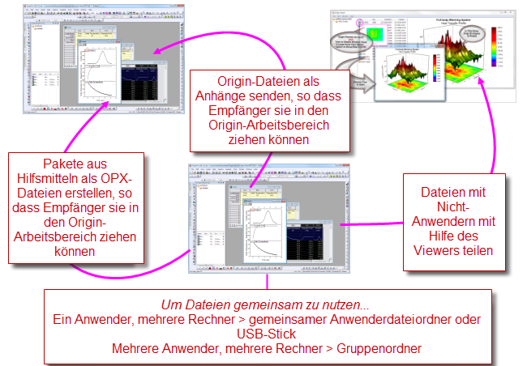

Origin-Projekte gemeinsam nutzen
Sharing-Files
- 
Möglicherweise möchten Sie einige Aspekte Ihrer Origin-Installation benutzerdefiniert anpassen und diese Anpassungen dann mit anderen Origin-Benutzern teilen. Benutzerdefinierte Einstellungen können in vielen Dateitypen, einschließlich Diagrammvorlagen (.otpu) und -designs (.oth), Analysevorlagen (.ogwu oder .opju), Dialogdesigns, Kurvenanpassungsfunktionen, Filtern des Importassistenten, LabTalk-Skriptdateien (.OGS) und X-Funktionen, gespeichert werden.
Teilen per Drag&Drop
Origin-Dateien per Drag&Drop teilen Origin, Dateien gemeinsam nutzenOrigin-Dateien gemeinsam nutzen Eine schnelle und einfache Möglichkeit, eine Datei mit anderen Anwendern gemeinsam zu nutzen, besteht in ihrem Versenden als E-Mail-Anhang. Der Empfänger kann die Datei dann mit Drag&Drop in seinen Arbeitsbereich von Origin ziehen.
Der Vorgang des Drag&Drop wird für die meisten Origin-Dateitypen unterstützt. Projektdateien (.opju) und Diagrammvorlagen (.otpu) von Origin werden automatisch geöffnet, nachdem sie im Arbeitsbereich "fallen gelassen" wurden. Andere Dateien werden in die entsprechenden Unterordner im Anwenderdateiordner kopiert. Wenn Sie beispielsweise eine Fitfunktionsdatei (.fdf) in den Arbeitsbereich ziehen, wird ein Dialog geöffnet, der nachfragt, wie Sie die neue Fitfunktion kategorisieren möchten.
 | Sie können einen kleinen Dialog zum Entfernen von Formeln und Links aus der aktuellen Auswahl, dem aktiven Blatt, der aktiven Mappe oder dem gesamten Projekt verwenden. Diese Option wandelt Formeln und Links in Rohzahlen um. Das Entfernen von Formeln und Links kann es einfacher machen, Projektdaten mit Kollegen zu teilen, ohne Dinge wie extern verknüpfte (DDE) Excel-Dateien teilen oder die Projektgröße vor dem Archivieren der Daten signifikant reduzieren zu müssen. |
Dateien mit mehreren Rechnern für einzelne Anwender teilen
Wenn Sie ein Einzelbenutzer sind und Origin auf mehreren Rechner installiert haben, können Sie Ihre benutzerdefinierten Einstellungen installationsübergreifend nutzen. Richten Sie den Anwenderdateiordner (UFF) auf einem gemeinsam genutzten Laufwerk ein, z. B. einem Netzwerk oder sogar einem USB-Speicherstick, und verwenden Sie bei jeder Installation den gleichen Pfad für den Anwenderdateiordner.
| Hinweis: Weitere Informationen zum Ändern des Pfads für den Anwenderdateiordner finden Sie unter: Hilfe: Origin: Origin-Hilfe > Benutzerdefinierte Anpassung und Automatisierung > Einstellen Ihrer Voreinstellungen > Anwenderdateiordner
|
Dateien mit anderen Anwendern in einem Netzwerk gemeinsam nutzen
Netzwerk, Dateien gemeinsam nutzenNetzwerk, InstallationDateien mit mehreren Anwendern gemeinsam nutzen Sie können einen Gruppenordner einrichten und dazu verwenden, Dateien mit anderen Anwendern zu teilen. Es sind mehrere Gruppen zugelassen. Jede Gruppe kann dabei ihren eigenen, spezifischen Anwender für die Rolle als Gruppenverwalter besitzen. Der Gruppenverwalter kann das Hilfsmittel Gruppenordner verwalten verwenden, um benutzerdefinierte Dateien zu veröffentlichen und sie auf diese Weise mit anderen Gruppenmitgliedern zu teilen. Wenn Gruppenmitglieder Origin starten, werden die veröffentlichten Dateien automatisch in ihre Origin-Software kopiert und stehen für die weitere Verwendung zur Verfügung.
| Origin unterstützt das Festlegen von mehreren Gruppenordnern, wodurch es möglich wird, dass die Gruppen unterschiedliche Dateien gemeinsam nutzen. Der Rechner des Leiters kann mehrere Gruppe einrichten und verschiedene Dateien in verschiedenen Gruppen veröffentlichen. Eine Mitgliederrechner kann zu mehreren Gruppen gehören und auf diese Weise alle Dateien erhalten, die der jeweilige Gruppenleiter veröffentlicht. |
| Hinweis: Weitere Informationen zu Gruppenordnern finden Sie unter: Hilfe: Origin: Origin-Hilfe > Gemeinsames Nutzen Ihrer Origin-Dateien mit Dritten > Dateien mit mehreren Anwendern gemeinsam nutzen > Gruppenordnermanager
|
Dateien packen
Origin-Dateien packenOPX-DateienPackdateien verwaltenOrigin-Datei per Drag&Drop teilenOrigin, Dateien gemeinsam nutzenOrigin-Dateien gemeinsam nutzen Origin verfügt über ein Hilfsmittel Packdateien verwalten, mit dem mehrere Dateien in eine einzelne Origin-Paketdatei (.opx) gepackt werden können. Es bietet damit eine bequeme Möglichkeit, benutzerdefinierte Applikationen zu verteilen, die mehrere Origin-Dateien, wie Vorlagen, X-Funktionen und LabTalk-Skriptdateien, enthalten. Die Funktion Packdateien verwalten umfasst Optionen zum Ausführen von LabTalk-Skripts vor und nach der Installation.
Um auf dieses Hilfsmittel zuzugreifen, klicken Sie auf Hilfsmittel und dann auf Packdateien verwalten.
Zum Installieren einer .opx-Datei ziehen Sie die Datei einfach per Drag&Drop in den Arbeitsbereich von Origin.
| Hinweis: Weitere Informationen zum Packen von Dateien finden Sie unter: Hilfe: Origin: Origin-Hilfe > Gemeinsames Nutzen Ihrer Origin-Dateien mit Dritten > Mehrere Dateien als OPX packen
|
Der Origin-Viewer
Der Origin Viewer ist eine kostenlose, alleinstehende Anwendung, mit der Informationen aus Origin-Projektdateien und Origin-Fensterdateien (Grafik, Arbeitsblatt, Matrix) auf Computern ohne installiertem Origin angezeigt und kopiert werden können.
- Der Origin Viewer steht als einzelne EXE-Datei bereit - es ist keine Installation erforderlich.
- Verfügbar als eine 64-Bit Windows-Anwendung oder als eine native Mac-Anwendung (nicht kompatibel mit 11.0.1, Big Sur).
- Wie beim Projekt Explorer wird bei Bewegung der Maus über das entsprechende Objekt eine Diagrammvorschau angezeigt. Außerdem bestehen die Ansichtsoptionen Symbole, Details und extragroße Symbole.
- Zur besseren Ansicht können Sie ein Diagramm in einem Popup-Fenster öffnen.
- Origins 3D-OpenGL-Diagramme können angezeigt und gedreht werden.
| Origin 2018 führte einen neuen Unicode-kompatiblen Projektdateityp ein -- die OPJU-Datei. Mit Versionen des Origin Viewer 9.6.5 oder höher kann jeder die neuen Unicode-kompatiblen OPJU-Projektdateien im OPJ-Format der Vorgängerversion von 2018 speichern, um Projekte mit Benutzern der älteren Versionen von Origin zu teilen. |
Wenn Sie Origin-Diagramme oder -Daten haben, die Sie mit Kollegen teilen möchten, die zurzeit kein Origin verwenden, können Sie die Seite des Origin-Viewers (http://originlab.com/viewer/) an sie weiterleiten. Dort können sie mehr über den Viewer erfahren und die kostenfreie EXE-Datei herunterladen.
Weiterführende Themen